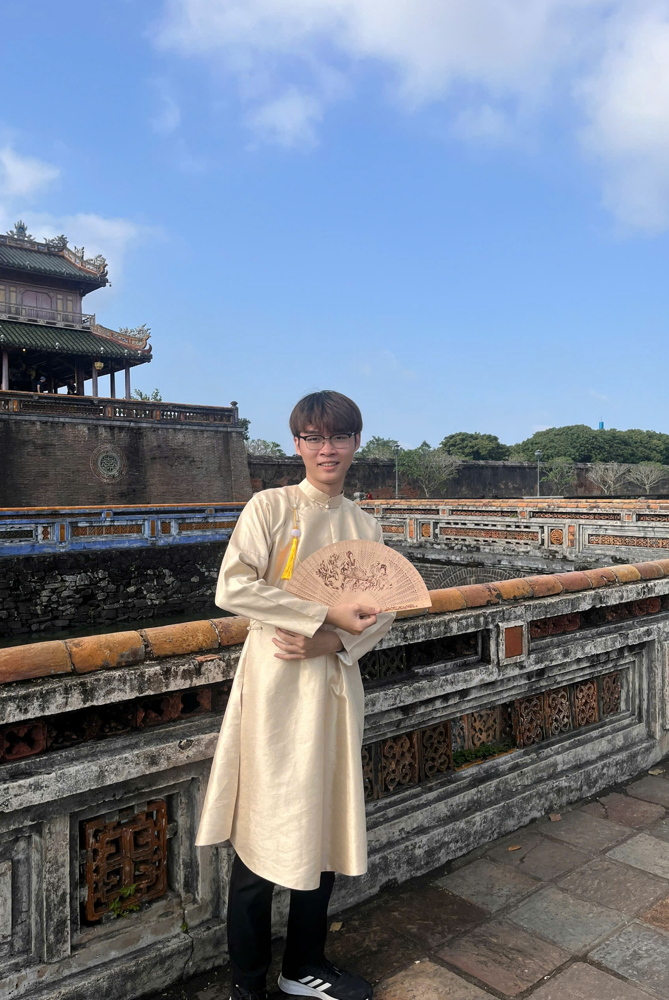

Le Xuan Tung
Trajectory Data Mining

Bui Dang Phuc
Trajectory Data Mining
| Home | Research Group | Teaching | Presentations |
|
Le Xuan Tung Trajectory Data Mining |
Bui Dang Phuc Trajectory Data Mining |

Phan Huynh Ngoc Tram Handwriting Synthesis |

Pham Thach Thanh Truc Handwriting Synthesis |

Huynh Tong Dang Khoa Handwriting Synthesis |

Nguyen Vu Khai Tam Statistical Learning |

Cao Huyen My Statistical Learning |

Le Hong Phong Statistical Learning |

Ho Ngoc Luat Statistical Learning |

Dang Hoai Nam Handwriting Synthesis |

Nguyen Thang Loi Statistical Learning |

Duong Tan Loc Statistical Learning |

Nguyen Thi Minh Phu Statistical Learning |
Tran Tuan Kiet Statistical Learning |
Cao Le Cong Thanh Statistical Learning |

Do Quang Luc Data Mining |

Nguyen Dang Khoa Statistical Learning |

Tran Minh Thien Statistical Learning |

Nguyen Quoc Viet Statistical Learning |

Nguyen Quoc Khanh Statistical Learning |
Dinh Thien Phuc Data Mining |
|
Tran Xuan Dat Statistical Learning |
Nguyen Hong Gam Statistical Learning |